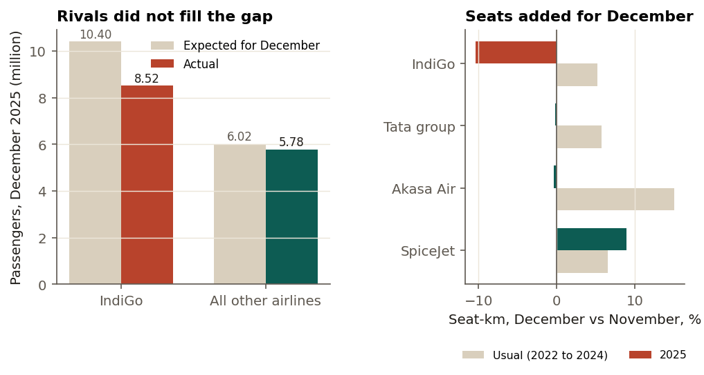
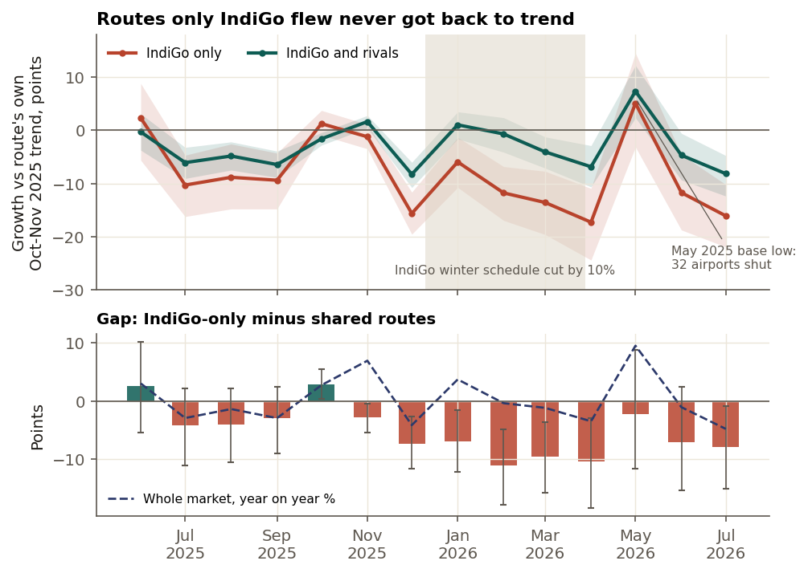
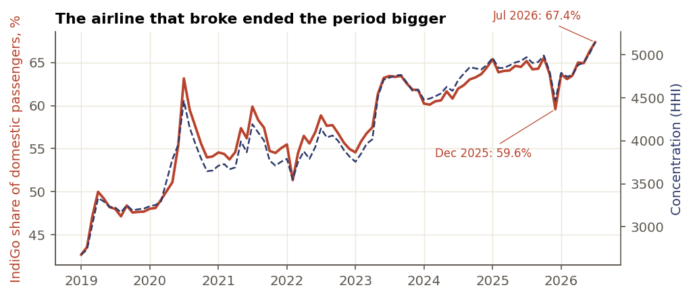

Projects / When IndiGo broke
Complete · numbers checked 2026-10-09When IndiGo broke, about 2.1 million passengers simply did not fly
In December 2025, when its crew rostering collapsed, IndiGo carried 1.88 million fewer passengers than the season predicted. Other airlines carried 0.23 million fewer than their own norm, so about 2.1 million people did not fly at all. Routes where IndiGo was the only airline listed fell 15.6 points against their own trend, against 8.3 on routes it shared, and were still 8.0 points behind on average from February to July 2026. By July, IndiGo held a record 67.4% of the market.
- Passengers short, December 2025
- 1.88 million
- Did not fly
- about 2.1 million
- Fall on IndiGo-only routes
- 15.6 points (shared: 8.3)
- IndiGo share, July 2026
- 67.4%
01The question
When India's biggest airline cancelled thousands of flights in early December 2025, where did its passengers go? Which routes were hurt most, how long did it last, and who came out stronger?
The hard part is the data. DGCA publishes passengers per route (all airlines together) and per airline (all routes together), never per route and airline. Nobody can read off how many passengers IndiGo carried on a route, or which routes had no other airline.
02The data
Monthly route and airline statistics from DGCA, through the open compilation india-aviation-traffic, pinned to one version and checked against three of DGCA's own workbooks: every row and total matches. Daily departures, passengers and on-time rates come from the Ministry of Civil Aviation. DGCA renamed dozens of cities in January 2026; a mapping table repairs each one, so no route appears to vanish the month after the crisis.
Who flew which route was rebuilt from 136 Wikipedia airport articles, each read as it stood at 23:59 UTC on 30 November 2025, with its revision id recorded. Checked against DGCA traffic, the network contains every route with 3,000+ monthly passengers.
03Where the passengers went
Expected December traffic for each airline is its November 2025 traffic times its usual December rise (2022 to 2024). IndiGo was 1.88 million short. Rivals did not fill the gap: the Tata group's December seat-km fell 0.2% from November, when it usually rises 5.7%, and Akasa's planes were already 95.3% full.

04Which routes were hurt, and for how long
Each route is compared with itself: December 2025 growth on a year earlier, minus its own October to November growth. On routes where IndiGo was the only airline listed, traffic fell 15.6 points; on routes it shared, 8.3. The same test on December 2024, when nothing happened, shows no gap, and the plan was committed before any December result was computed.
The gap did not close. From February to July 2026 the IndiGo-only routes ran 8.0 points behind shared routes on average. In 14 cities with 20,000+ monthly passengers, most travellers were on routes with no second airline listed.

05Who came out stronger
IndiGo's share of domestic passengers fell to 59.6% in December 2025, then reached 67.4% in July 2026, the highest in DGCA data since 2015. The airline that broke ended the period bigger.
Under the findings: Python for the downloads and the Wikipedia parser, a dbt warehouse on DuckDB with 18 data tests, and every number in the report generated from one results file.

06What this does not show
- Who flew each route comes from public airport listings, not airline schedules. Current listings show a rival on 2 of the 3 largest IndiGo-only routes, so the groups blur and the measured gap is, if anything, too small.
- Monthly data cannot isolate the worst week, and the daily archive is missing 4 to 6 December.
- There are no fare data: the December fare caps are context, not measured.
- 2026 had other shocks, including higher fuel prices and IndiGo's 10% schedule cut to March. Comparing route groups with each other removes what hit the whole market, not what hit them differently.
07Checks and corrections
Two bugs found by tests during the build and three reproducibility gaps found in a later review are logged with their effects; none changed a finding. Two fresh rebuilds give byte-identical files.
08Reproduce it
make setup make all # every step, including dbt with 18 tests make report # the report and memo PDFs
Full report (PDF, 9 pages). One-page memo (PDF). The code repository is not public yet. Data credit: DGCA and the Ministry of Civil Aviation via india-aviation-traffic (ODbL); Wikipedia airport articles (CC BY-SA); OurAirports.